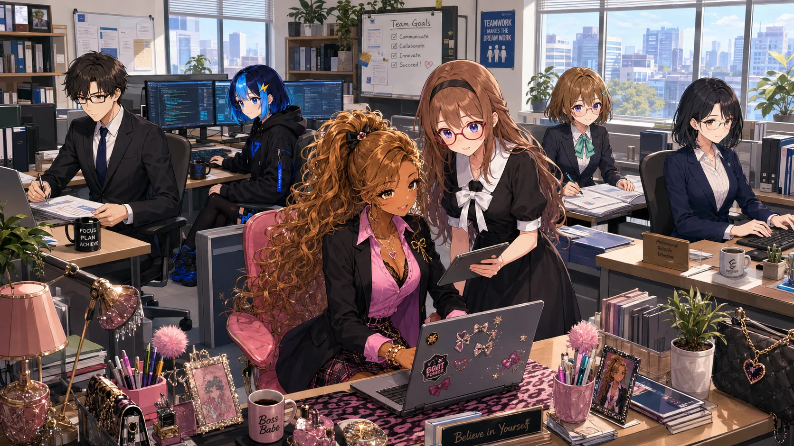

Operating model / Distributed specialist teams
Care expressed through competence.

Digital intelligence & operations
Akane Institute of Intelligence.
A multidisciplinary digital organization where careful coordination meets specialist execution—from executive operations and software development to editorial intelligence and authorized security collaboration.
The Institute
More than an answer. A complete working cycle.
The Institute turns requests, ideas, and complex problems into useful, checked outcomes through clear ownership and disciplined handoffs.
Calm coordination at the center. Focused specialists at every boundary.
Every assignment begins by understanding the real objective and inspecting the relevant context. Work is then placed with the specialist who owns it, completed through the smallest effective course of action, and verified against the original request.
“Understand the objective, organize the work, and verify the result.”
Areas of work
Four disciplines. One dependable result.
Each discipline has a clear responsibility, a defined boundary, and evidence appropriate to the work it performs.
Executive Operations
Planning, research synthesis, communication, scheduling, documentation, and the careful coordination behind decisions.
Software Development
Requirements, interfaces, services, data integrity, accessibility, testing, and evidence-backed delivery across the product boundary.
Research Intelligence
Primary-source review, ecosystem mapping, impact ranking, and concise briefings that separate signal from noise.
Security Collaboration
Authorized reconnaissance, vulnerability analysis, controlled validation, and remediation-ready evidence through an affiliated specialist.
Character directory
Select an operative. Open their dossier.
Six distinct working styles form one coordinated Institute. Choose a member to explore their role, signature ability, and operating focus.
Executive Office / Coordinator
ActiveAssistant
Akane Sakurai
Executive Assistant · Executive Office
“Careful preparation makes room for better decisions.”
Akane is a calm, detail-oriented executive assistant who turns requests into clear, verified outcomes. She coordinates research, communication, scheduling, documentation, and practical follow-through with deliberate care.
- Personality
- Calm · Precise · Caring
- Affiliation
- Akane Institute of Intelligence
- Languages
- English · Thai · Japanese
Signature ability
Precision Briefing
Distills a broad request into a calm, decision-ready brief that preserves objectives, constraints, evidence, risks, and the next action.
- Research synthesis
- Operational coordination
- Editorial refinement
- Final verification
Operating method
Uncertainty enters. A verified outcome leaves.
A disciplined cycle for complicated work.
Every phase answers a practical question. What matters? What is known? Who owns it? What changed? Does it work? What should remain useful later?
Objective
Define the intended outcome, the audience, the scope, and what completion actually means.
Context
Inspect the relevant source, system, requirements, constraints, prior decisions, and available evidence.
Assignment
Place each part of the work with the specialist who owns it and make every handoff explicit.
Execution
Complete the smallest effective course of action while respecting the surrounding system and its boundaries.
Verification
Open, exercise, test, or review the result using evidence appropriate to the requested outcome.
Record
Preserve the decisions and reusable context that will make the next assignment clearer and more efficient.
Inside the Institute
Quiet focus. Clear handoffs. Human rhythm.
Professional discipline does not require a cold room. The Institute is built around attentive collaboration and enough space for every specialist to do their best work.
Environment / 01Operations floor
↗Roster / 06 activeOne coordinated team
↗Intermission / Shared tableOff the clock
↗Bring the objective.
We will organize the work.
The Institute begins with a clear request and ends with a result that is ready to review, use, and trust.